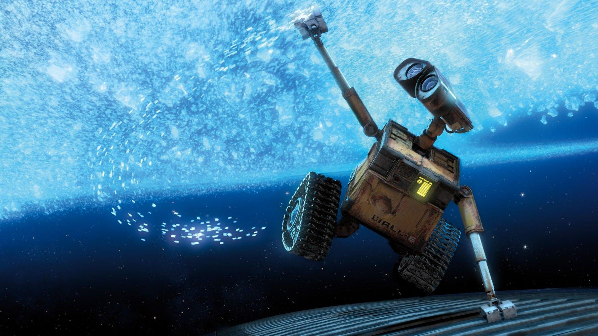

About
Character
Design
Gallery
Soundtrack
WALL-E, short for Waste Allocation Load Lifter Earth-class, is the last robot left on Earth.
during 700 years, WALL-E has developed a personality, and he's more than a little lonely. Then he spots EVE
Smitten WALL-E embarks on his greatest adventure yet when he follows EVE across the galaxy.